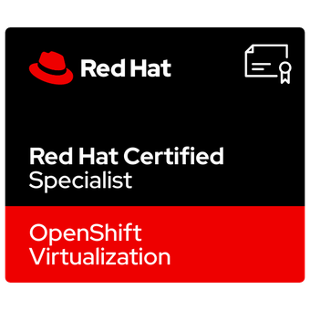

whoami
I'm a Senior Linux System Administrator based in the Czech Republic, with over 8 years of professional experience managing enterprise Linux environments. I specialize in the Red Hat ecosystem, Ansible automation, and OpenShift container platforms, focused on infrastructure that is reliable, automated, and easy to operate at scale.
Alongside professional work, I maintain a production-like homelab where I continuously test networking, identity management, monitoring, and self-hosted services in realistic conditions. Open source is not a preference for me, it is my default engineering approach.
certifications

skills
Systems
Administration of reliable production systems with focus on stability and performance.
- RHEL / Debian
- Proxmox VE / KVM & LXC
- OpenShift / Kubernetes
Automation
Automation-first approach to reduce manual work and deliver repeatable operations.
- Ansible
- Python
- Bash
Identity & Access
Design and operation of centralized identity and secure access management.
- FreeIPA
- Keycloak
- OpenLDAP
Databases & Monitoring
Reliable data services and infrastructure observability for proactive operations.
- MariaDB
- PostgreSQL
- Zabbix
Cloud
Experience with cloud environments and hybrid platform operations.
- Oracle Cloud
- AKS (Azure)
- VMware VCD
Networking
Secure network design focused on segmentation, connectivity, and service availability.
- OpenWRT
- OpenVPN
- Knot DNS
- WireGuard
homelab
My homelab is a long-running, production-like environment for practical experimentation. I use it to validate automation patterns, test new tools safely, and improve operational workflows before applying ideas more broadly.
It is not a one-time lab project but an always-on platform with real services, monitoring, and network segmentation, giving me continuous hands-on practice across Linux, virtualization, and DevOps operations.
Virtualization
Efficient workload isolation and hosting for both system and application services.
- Proxmox VE
- KVM
- LXC
- Docker
Networking
Practical network architecture with secure remote access and internal name resolution.
- Turris OS
- nftables
- WireGuard
- Knot DNS
Services
Continuous operation of self-hosted services with emphasis on reliability and maintainability.
- Home Assistant
- Zigbee/Thread
- MariaDB
- FreeIPA